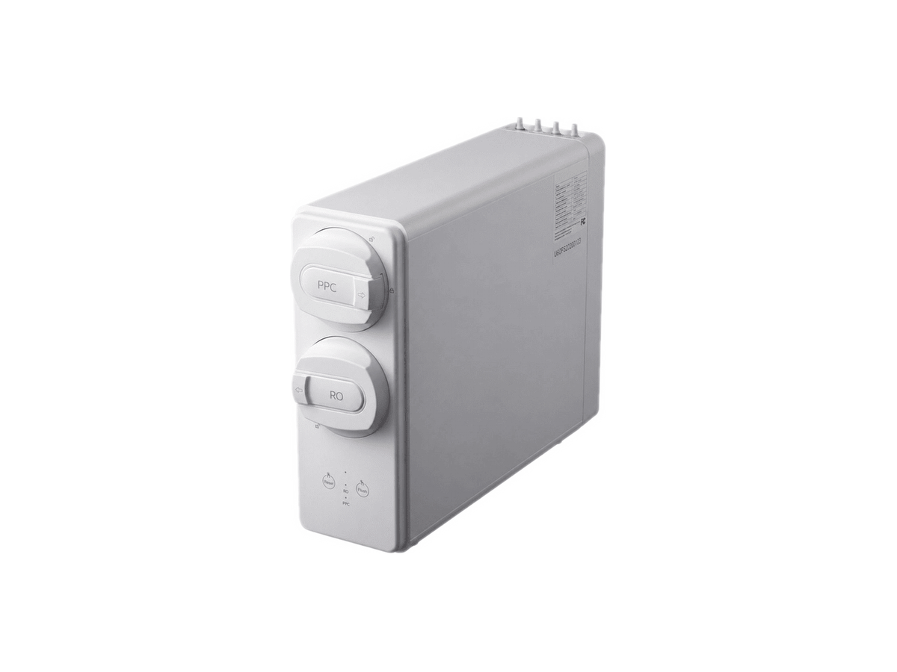

تحت المغسلة
تحت المغسلةRP-U07
منقّي RO تحت المغسلة 400–600 GPD
SKU: RP-U07
MOQ: يُؤكَّد عند الاستفسار
الرئيسية/المنتجات/أنظمة RO تحت المغسلة/ RP-U09

أنظمة RO تحت المغسلة
منقي RO عالي السعة بوصول أمامي — مستويان للسعة. RP-U09 يتصدر السلسلة.
RP-U09 وRP-U10 مستويان للسعة من منقي RO نفسه بالوصول الأمامي ويشتركان في مخطط الترشيح نفسه وبنية تغيير الخرطوشة بالوصول الأمامي نفسها. RP-U09 هو المستوى عالي السعة (800–1400 GPD، 2.0–3.5 L/min، 382 × 148 × 358.5 مم)؛ وRP-U10 هو المستوى المدمج (400–1000 GPD، 1.05–2.6 L/min، 398 × 114 × 303.5 مم). ويتداخل المستويان عند 800–1000 GPD. تُؤكَّد المواصفات لكل موديل وطلب.
الجهد / التردد قابل للتكوين حسب بلد الوجهة. تُؤكد التكوينات الأخرى لكل طلب.
RP-U09 منقي RO عالي السعة بوصول أمامي للتركيب تحت المغسلة. يعمل المستوى عالي السعة بقدرة 800–1400 GPD مع تدفق 2.0–3.5 L/min، ويغطي المستوى المدمج 400–1000 GPD بمعدل 1.05–2.6 L/min، فيتداخل المستويان عند 800–1000 GPD. ويشترك المستويان في ترشيح مركب للمرشح الأولي/اللاحق + RO نفسه وبنية تغيير الخرطوشة بالوصول الأمامي نفسها، مع حجم اسمي للمياه المنقاة 4000 L في المستوى عالي السعة. وهو مصمم لأصحاب العلامات التجارية الذين يحتاجون إلى RO تحت المغسلة عالي التدفق للأسر المزدحمة.
ما الحد الأدنى لكمية الطلب؟
الطلب الأول 200 وحدة لكل موديل، وإعادة الطلب 500 وحدة.
هل يمكنني طلب عينة قبل طلب بالجملة؟
نعم. العينات جاهزة خلال 15 يومًا، وتُسترد رسوم العينة عند أول طلب بالجملة. تستغرق الطلبات بالجملة 40 يومًا بعد اعتماد العينة وتُشحن FOB Shenzhen.
أي مستوى يجب أن أختار؟
اطلب عرض السعر باسم RP-U09 وحدد المستوى: عالي السعة 800–1400 GPD أو مدمج 400–1000 GPD. ويتوفر المستوى المدمج أيضًا بلمسة زرقاء بالمواصفات نفسها.
مستويان للسعة — اطلب عرض السعر باسم RP-U09 وحدد المستوى (عالي السعة 800–1400 GPD أو مدمج 400–1000 GPD).
مرّر فوق صورة متغير لرؤية مواصفاته. على الشاشات اللمسية، انقر على صورة.


المواصفات الكاملة لكل متغير، جنبًا إلى جنب. يعرض جدول المواصفات أدناه قيم RP-U09.
| المواصفة | RP-U09-1 — عالي السعة (M2102R) | RP-U09-2 — مدمج (M2103R) |
|---|---|---|
| سعة التناضح العكسي | 800–1400 GPD | 400–1000 GPD |
| إنتاج التناضح العكسي | 2.0–3.5 L/min | 1.05–2.6 L/min |
| الأبعاد (الطول×العرض×الارتفاع) | 382 × 148 × 358.5 mm | 398 × 114 × 303.5 mm؛ الطول يشمل الخراطيش |
| الحجم المقنن للمياه المنقاة | 4000 L | >4000 L |
| الترشيح | فلتر مركّب أولي/لاحق + RO | فلتر مركّب أولي/لاحق + RO |
| الجهد / التردد | قابل للتكوين حسب بلد الوجهة | قابل للتكوين حسب بلد الوجهة |
| اللون | أبيض | أبيض، أزرق |
7 صفوف مواصفات من كتالوج ROPureOEM.
| سعة التناضح العكسي | 800–1400 GPD |
|---|---|
| إنتاج التناضح العكسي | 2.0–3.5 L/min |
| الأبعاد (الطول×العرض×الارتفاع) | 382 × 148 × 358.5 mm |
| الحجم المقنن للمياه المنقاة | 4000 L |
| الترشيح | فلتر مركّب أولي/لاحق + RO |
| الجهد / التردد | قابل للتكوين حسب بلد الوجهة |
| تكوينات أخرى | يُؤكد حسب الطلب |
المواصفات مأخوذة من كتالوج ROPureOEM. وعندما لا تكون القيمة مؤكدة بعد، تُدرج على أنها «مؤكدة لكل طلب» — ونحن لا ننشر أرقامًا غير مؤكدة.
تحت المغسلةمنقّي RO تحت المغسلة 400–600 GPD
SKU: RP-U07
MOQ: يُؤكَّد عند الاستفسار
 تحت المغسلة
تحت المغسلةRO تحت المغسلة مع خزان تسخين
SKU: RP-U08
MOQ: يُؤكَّد عند الاستفسار
 تحت المغسلة
تحت المغسلةمنقّي RO بثلاث خراطيش
SKU: RP-U11
MOQ: يُؤكَّد عند الاستفسار
 تحت المغسلة
تحت المغسلةمنقّي RO مدمج بخرطوشتين
SKU: RP-U12
MOQ: يُؤكَّد عند الاستفسار